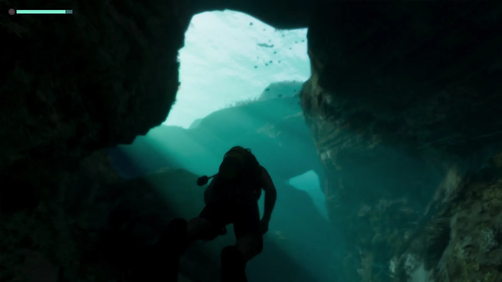
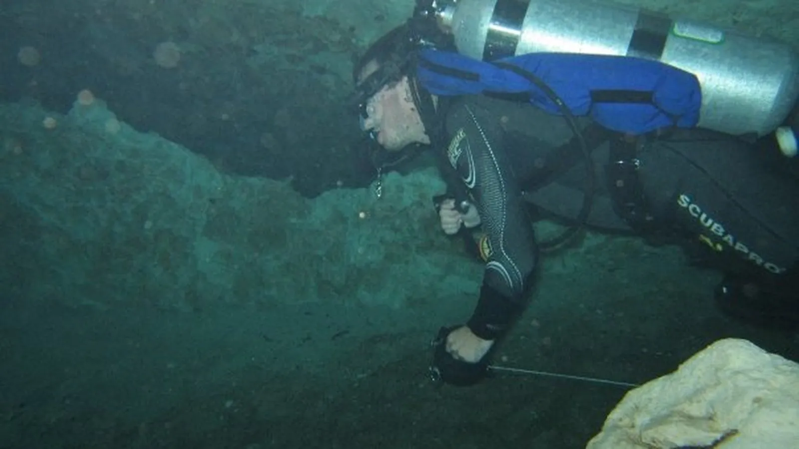
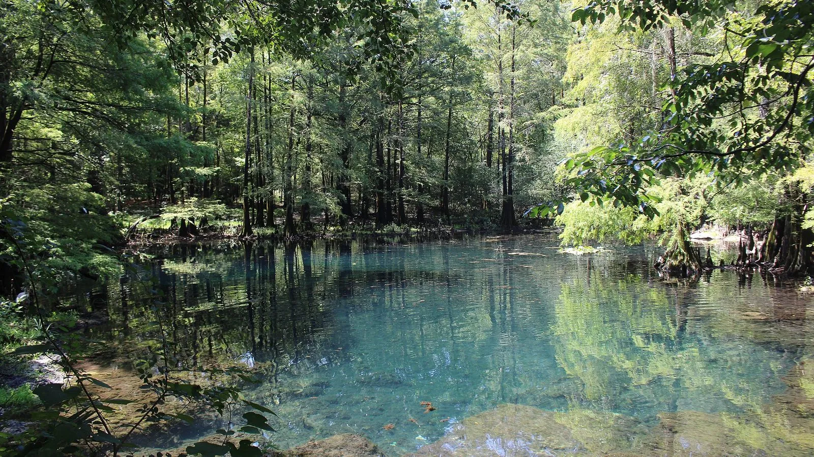
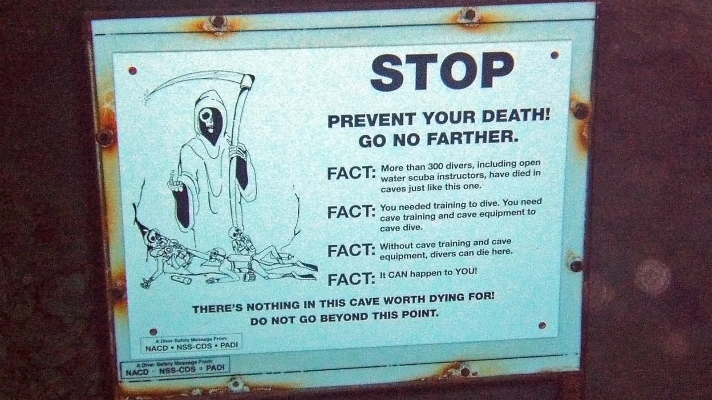

Подводная пещера в GTA 6 и источники Флориды
Опубликовано:
Подводные пещеры — настоящая часть природы Флориды: под штатом больше тысячи источников. Но где пещера из игры — в море или в источнике, — Rockstar не говорила, так что это наша трактовка.


- В «Расширенном показе» GTA 6 человек плывёт под водой в каменной пещере, сверху пробивается голубой свет.
- Где эта пещера, Rockstar не говорила.
- По оценке геологов, во Флориде больше 1 000 источников — возможно, самое большое скопление пресных источников на Земле.
- Вода в большинстве из них круглый год около 21–24 °C.
- У входа в пещеры источников висят таблички, которые не пускают дальше дайверов без подготовки.
Что в игре
Около 17:16 «Расширенного показа» камера уходит под воду. Человек плывёт в полумраке через каменную пещеру, впереди проём, сквозь который сверху пробивается голубой свет. В левом верхнем углу экрана — полоска интерфейса: значит, это момент игрового процесса.
Сразу перед этим в нарезке — дом на сваях у воды, сразу после — спортзал. Где именно находится пещера, по кадру не понять.
Что в реальности
По данным Департамента охраны окружающей среды Флориды, геологи насчитывают в штате больше 1 000 источников — это, возможно, самое большое скопление пресных источников на Земле. Во Флориде 27 источников первой величины и 70 — второй, больше, чем в любом другом штате США.
Вода в большинстве флоридских источников круглый год около 70–75 °F (21–24 °C). В некоторых источниках есть подводные пещеры, и у входа в них ставят предупреждающие таблички для дайверов.

У входа в пещеры источников ставят табличку со смертью с косой: «STOP. Prevent your death! Go no farther». На табличке у Vortex Spring во Флориде написано, что в таких пещерах погибли больше 300 дайверов, включая инструкторов, и что без специальной подготовки и снаряжения для пещер дальше плыть нельзя.

Совпадает и отличается
| Флорида | GTA 6 | |
|---|---|---|
| Подводные каменные пещеры | Да, у многих источников | 🟡 Да |
| Свет сверху через проём | Да, вход в пещеру у поверхности | 🟡 Да |
| Где пещера | Больше 1 000 источников по штату | 🔵 Rockstar не говорила |
Источники: Rockstar Games — «Grand Theft Auto VI: An Extended Look» (17:16); Florida Department of Environmental Protection — Springs Fact Sheet; Wikimedia Commons — фото Ryan Cantey (CC BY-SA 3.0), Michael Rivera (CC BY-SA 4.0), Greg Grimes (CC BY-SA 2.0).
Реальные фото: Фото: Picture by Ryan Cantey, CC BY-SA 3.0 · Wikimedia Commons; Фото: Greg Grimes from Starkville, MS, USA. Cropped and denoised slightly by Daniel Ca, CC BY-SA 2.0 · Wikimedia Commons; Фото: Michael Rivera, CC BY-SA 4.0 · Wikimedia Commons. Кадры игры: Rockstar Games.
Каждый день — одно сравнение: кадр игры рядом с реальным фото. Подписывайтесь:
YouTubeInstagramTikTok
 vs
vs